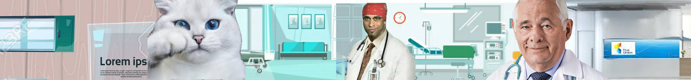

|  |

Список Предоставляемых Услуг
|
№ |
Наименование, описание |
Цена |
|
1 |
Терапевтический приём - это очень важная часть работы врачей клиники. Практически каждый пациент, обратившись в клинику, в первую очередь попадёт к врачу общего приёма – это специалист, который внимательно общается с владельцем, выясняет жалобы и симптомы заболевания. |
25 р. |
|
2 |
УЗИ - . очень информативный, безопасный и безболезненный метод исследования. Позволяет выявить огромное количество заболеваний внутренних органов и поверхностных структур организма.. |
20 р |
|
3 |
Рентген органов грудной полости .позволяет диагностировать болезни органов дыхания, сердца, показан при травмах, падениях с высоты |
15 р. |
|
4 |
Гибкая эндоскопия.. ППозволяет исследовать : ротовая полость, пищевод, желудок, 12 перстную кишку. Колоноснопия. Бронхосокпия. Бронхосокпия. За счет тонкого и гибкого конца есть возможность провести более глубокую диагностику легких взять цитологию, смыв |
|
|
5 |
Стационар это больница для животных, где они 24 часа в сутки находятся под наблюдением врача, получают необходимый уход, диагностические и лечебные процедуры. В нашем стационаре животные находятся в индивидуальных боксах с прозрачной дверью, вентиляцией и «теплым полом». |
|
|
6 |
хирургия святая святых ветеринарной клиники. Именно здесь часто идёт борьба за жизнь пациента.. | |
|
7 |
Стоматология Ваша собака или кошка не может пожаловаться на зубную боль, но у 4 из 5 питомцев старше 3 лет есть проблемы с зубами. Если не уделять этому внимания, это может привести к серьёзным последствиям – потере зубов, тяжелым заболеваниям почек, сердца и других органов. |